Exhibition at the West end Gallery for the Savera Group
Amazing ceramics, photography and the Magical Cloak all came together in November last year to celebrate the work of the Savera Group.
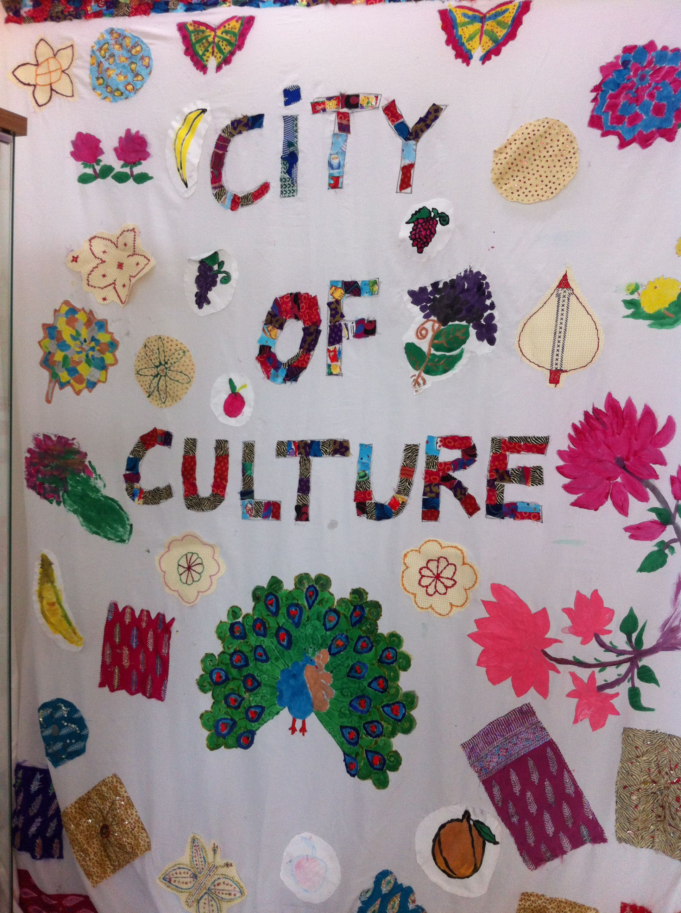Fine artist who specialises in drawing and painting.
Amazing ceramics, photography and the Magical Cloak all came together in November last year to celebrate the work of the Savera Group.
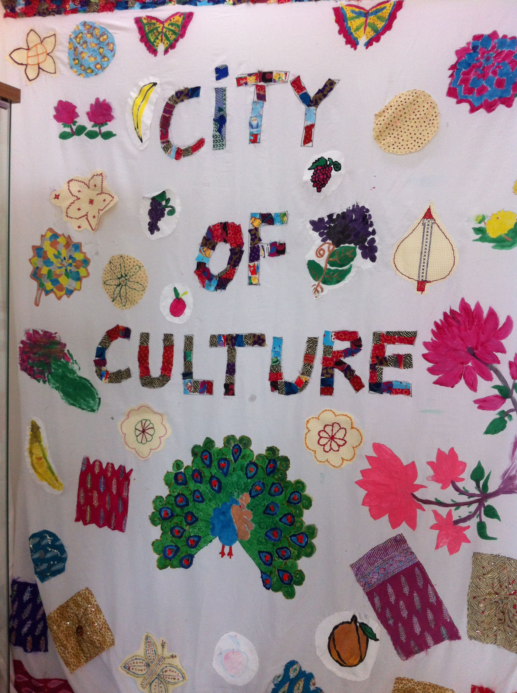On Sat 20th of June I became Jane Earp… Yay and very proud too!
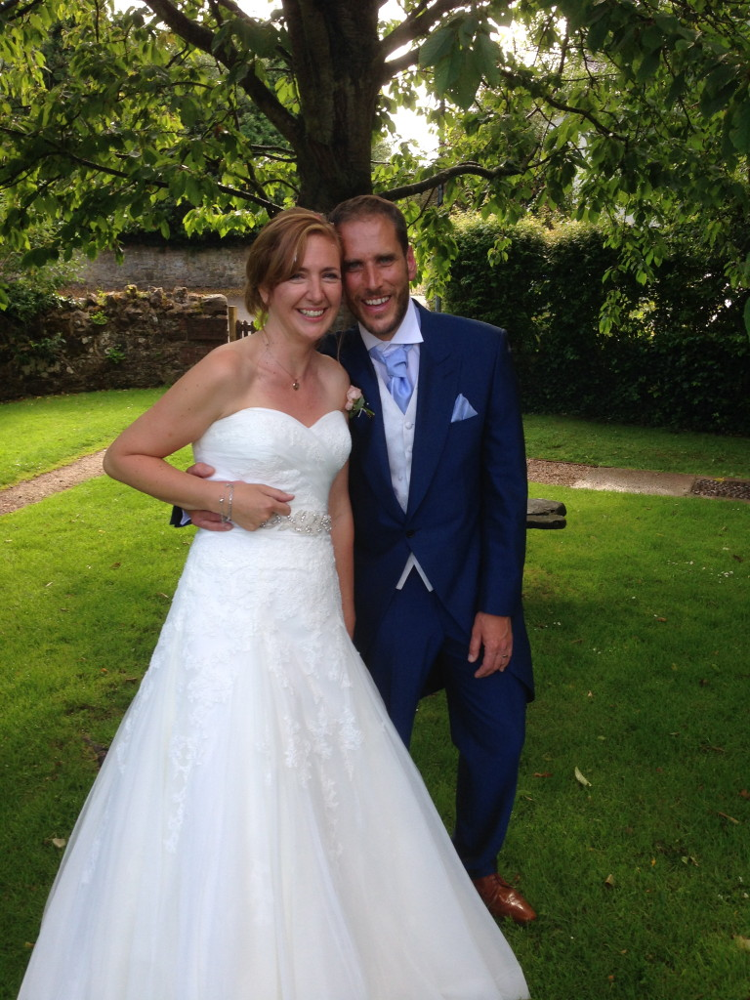in April 2014 beautiful Evan was born
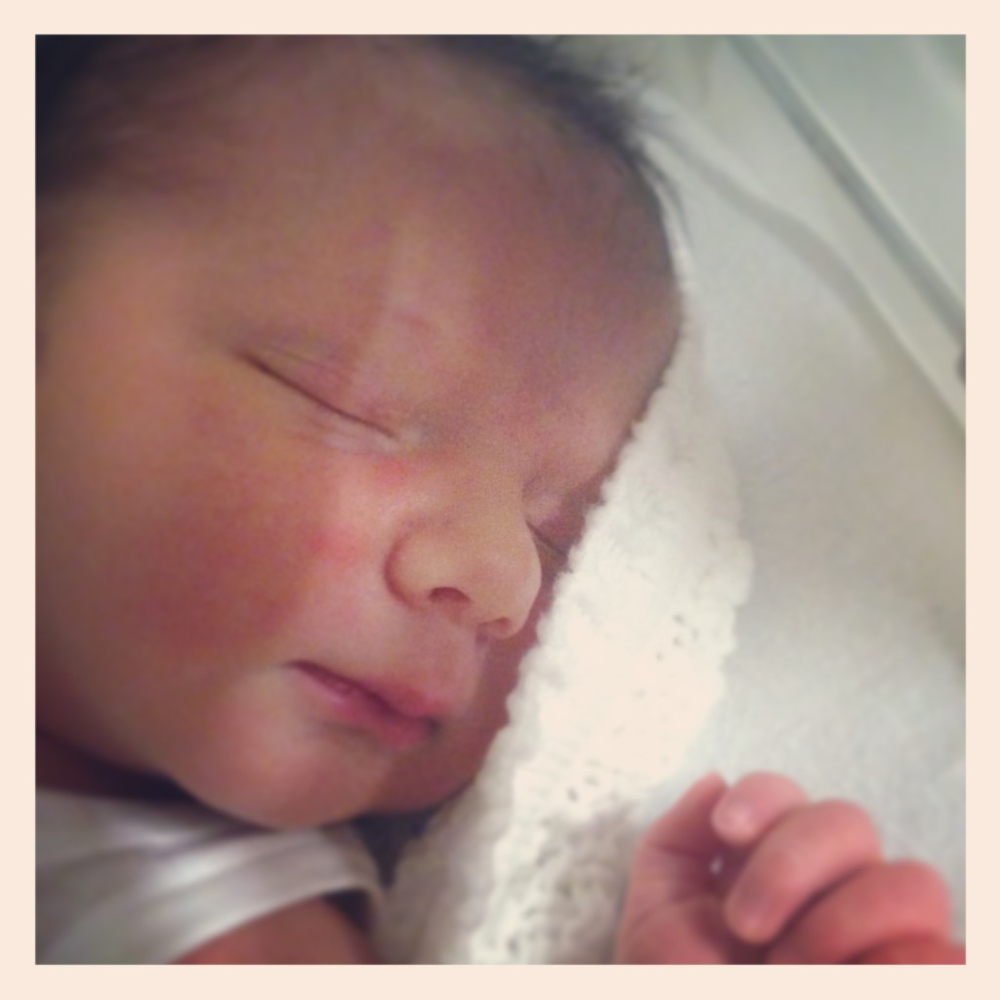Miller Construction, myself and Kevin have been busy working on a very exciting project with these two schools! The new building that will house both of the schools will be ready by next summer time and they will have some special art work to welcome them!!
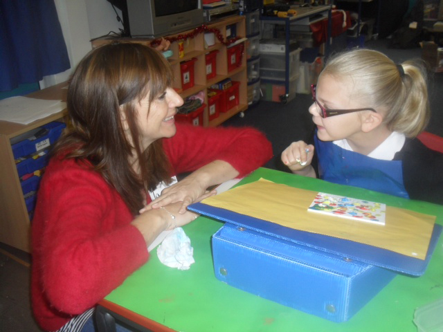The space at the LCB depot worked very well for us 3 with Gills installation work and mine and kevins on the wall, all complimenting each other. We tried out new ideas and felt that we had great success!! Well done US
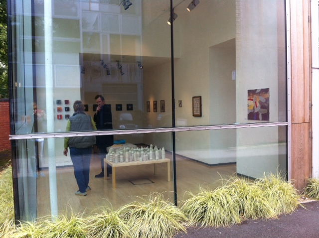For the Everybody’s Reading project myself and Mahsuda worked with the Savera Centre in Leicester for a number of weeks and it culminated in a fantastic exhibition at the Pedestrian gallery in Leicester last week. The final piece hangs in the window and is a beautiful patchwork of ideas, needlework, painting and drawing.
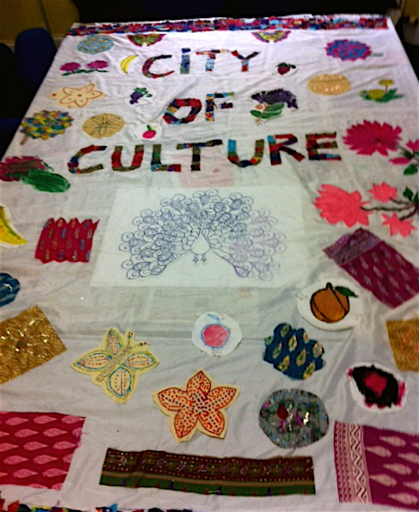The women at the art group are fabulous painters!!
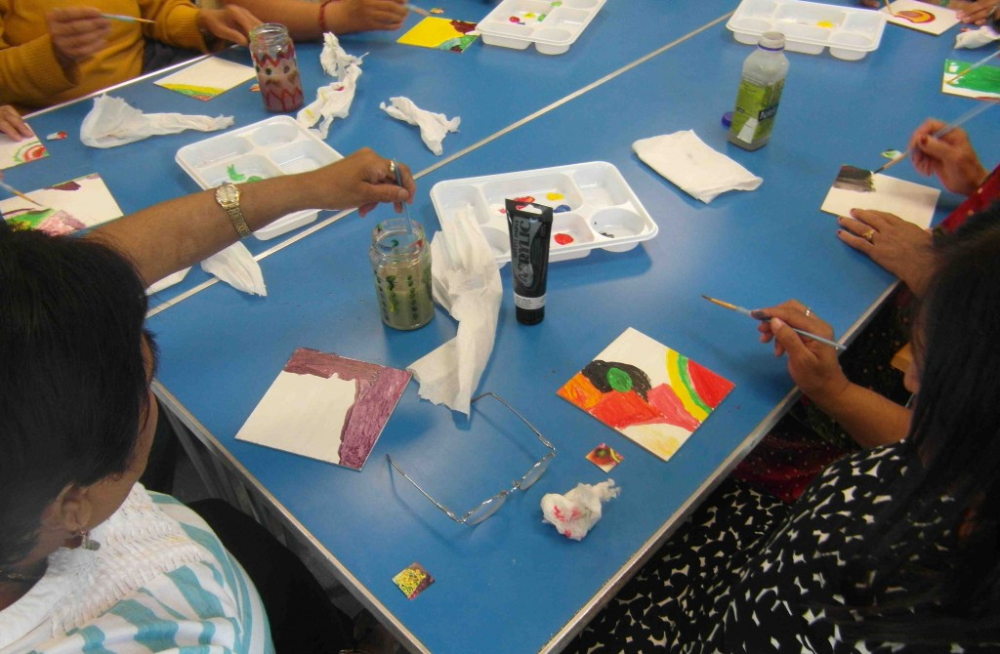Showing some of my new stuff in the Melbourne arts festival….15th & 16th September….come see….
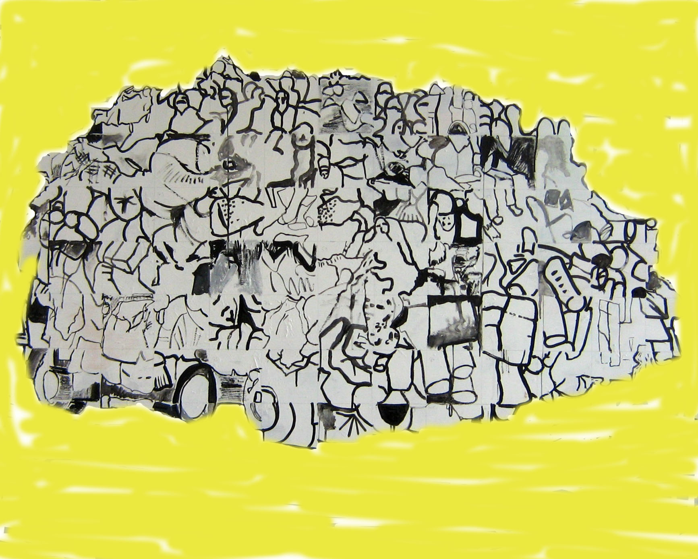New collaborative work is surprising us loads!!
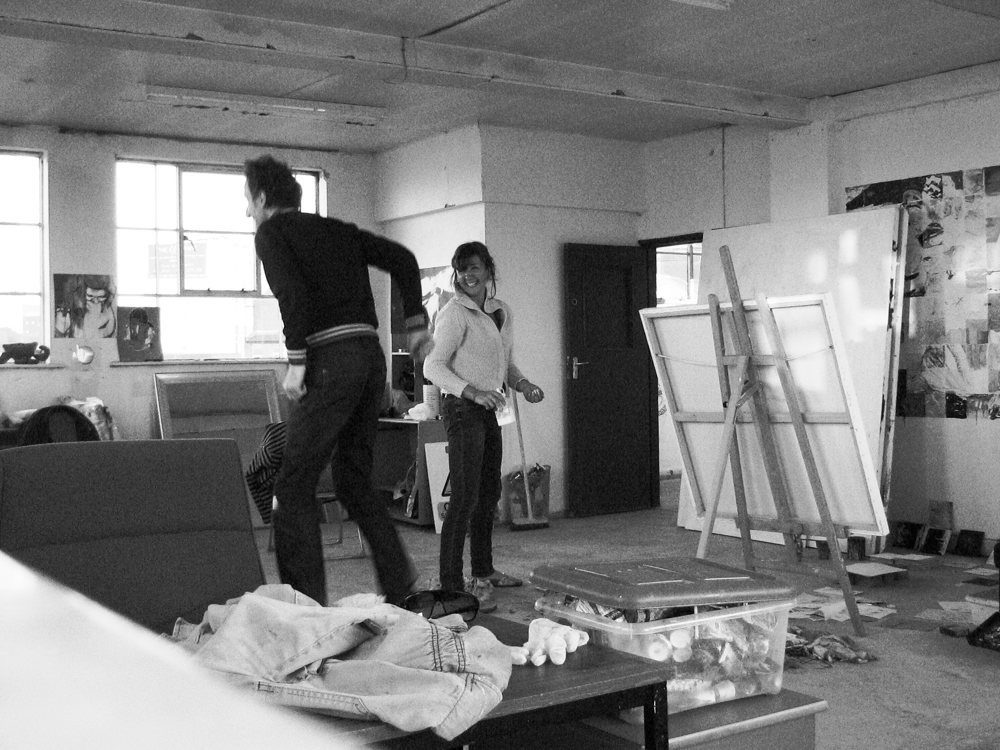The Brightsparks group at Embrace Arts in Leicester produced this fantastic clown artwork in the 4 week workshop that me and kevin ran. We loved doing it and everyone was amazed at the final piece!
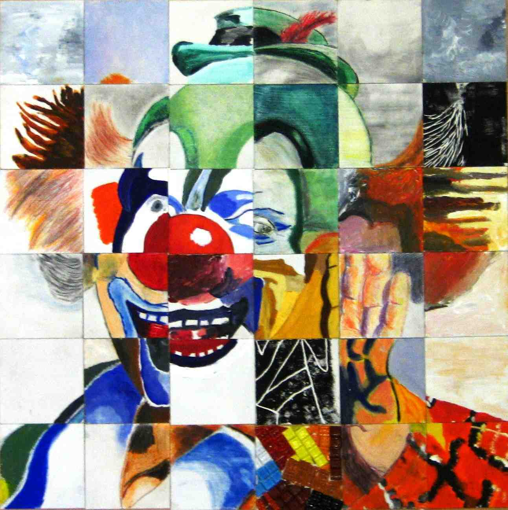